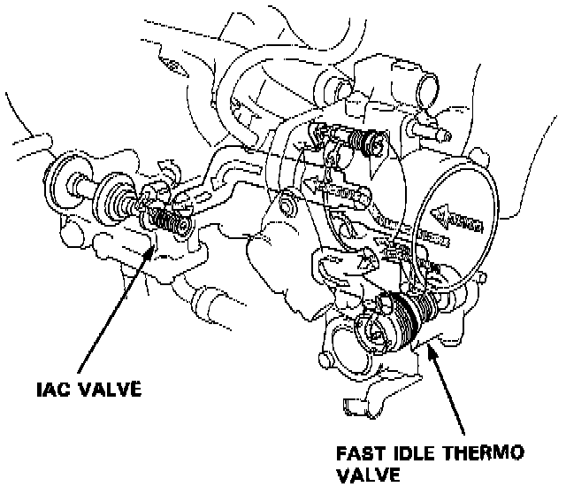

Idle Up Control Valve: Description and Operation
Idle Air Control (IAC) Valve & Fast Idle Valve Location:

PURPOSE
To prevent erratic running when the engine is warming up, it is necessary to raise the idle speed.
OPERATION
When the engine is cold, the engine coolant surrounding the thermowax contracts the plunger, allowing additional air to be bypassed into the intake manifold so that the engine idles faster. When the engine reaches operating temperature, the valve closes, reducing the amount of air bypassing into the manifold.
CONSTRUCTION
The fast idle thermo valve contains a thermowax plunger.